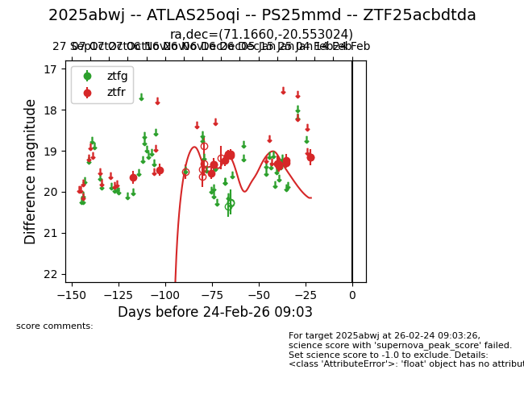
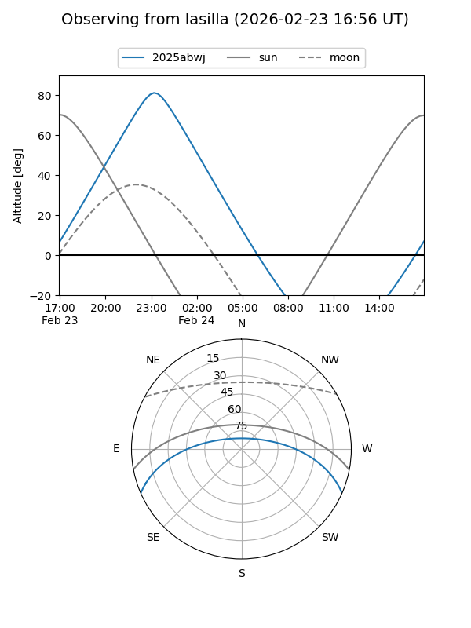
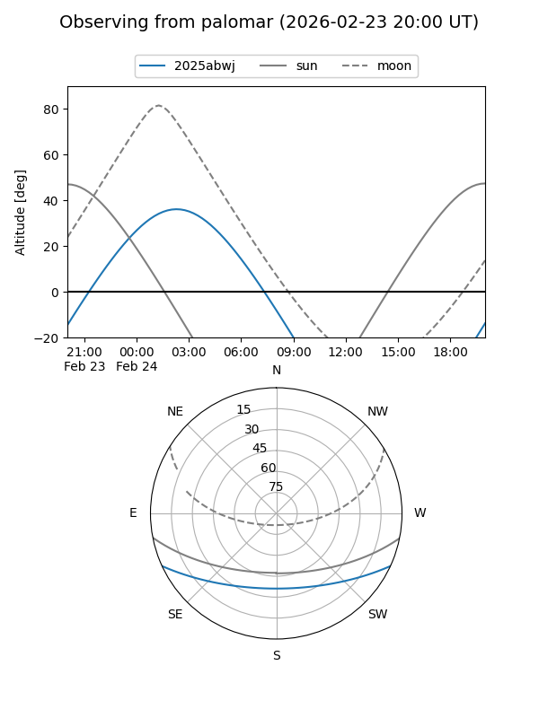
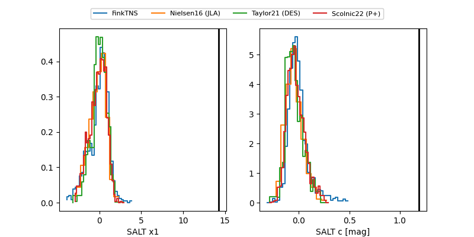

2025abwj
Target 2025abwj at 2026-01-15 09:25
Aliases and brokers:
FINK: link
Lasair: link
ALeRCE: link
TNS: link
YSE: link
alt names
ZTF25acbdtda (ztf,fink_ztf)
2025abwj (tns,yse)
ATLAS25oqi (atlas)
PS25mmd (panstarrs)
Coordinates:
equatorial (ra, dec) = 71.1660,-20.55302
equatorial (HMS+DMS) = 04:44:39.84,-20:33:10.89
galactic (l, b) = (219.2447,-36.71957)
Flags:
Photometry:
last ztfr=19.32
11 ztfr detections
Lightcurve

Visibility


Additional plots
